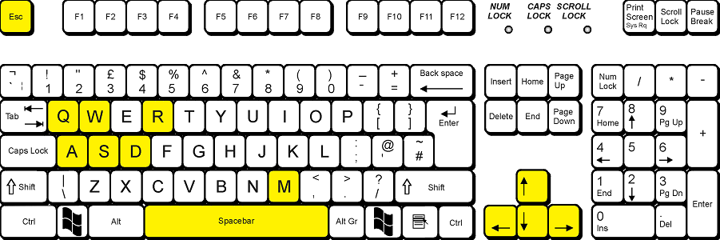

Drive A Car
Authors:
Juraj Marcin
Peter Tóth
Programming language:
Unity 3D - JavaScript, C# (game)
Java (launcher)
V tejto hre si vyskúšate aké je to šoférovať auto, byť taxikárom alebo pretekárom rallye. Táto hra ponúka unikátny zážitok zadarmo. Postupne si odomykáte levely peniazmi (upjoše, 1 upjoš = 17,365€), ktoré si zarobíte plnením úloh v leveloch. Sú zobrazené v ľavom dolnom rohu. Vlastnosti auta sme sa pokúšali napodobniť realite napríklad auto na rallye má väčšiu maximálnu rýchlosť ako taxík. V prvom stĺpci levelov si vyskúšate, aké je to byť taxikárom. Tieto levely stoja každý po 25 upjošov a za prejdenie dostanete 30 upjošov. V druhom stĺpci si vskúšate, aké je to byť pretekárom rallye. Levely stoja taktiež po 25 upjošov a dostanete základ 20 upjošov plus 1 upjošov za každú ušetrenú sekundu. Čas ukazuje v hornej časti obrazovky. V tretej sérii si môžete vo všetkých leveloch jazdiť ako chcete preto ten názov "Voľná jazda". Tieto levely stoja spolu 250 upjošov.
Esc - návrat do menu (v menu ukočí hru)
W alebo šípka hore - zrýchlenie
S alebo šípka dole - brzdenie a cúvanie
D alebo šípka doprava - zabočenie doprava
A alebo šípka doľava - zabočenie doľava
SPACE - ručná brzda
Q - zmena pohľadu
M - vyvolanie mapy
R - otočenie auta na kolesá

Esc - back to menu (in menu extits game)
W or UP ARROW - acceleration
S or DOWN ARROW - breaking and reverse
D or RIGHT ARROW - steer right
A or LEFT ARROW - steer right
SPACE - handbrake
Q - change view
M - toggle map
R - rotate car to default rotation